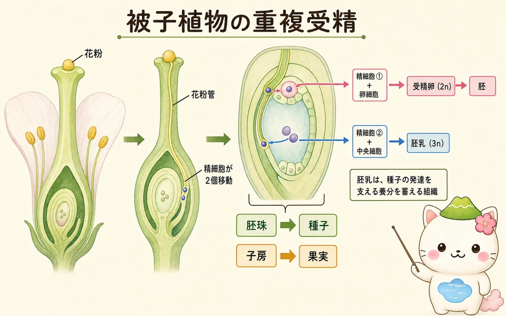

世代交代と染色体数
植物の生活環では、二倍体（2n）の胞子体と、一倍体（n）の配偶体が世代を交互にくり返します。胞子体は減数分裂によって胞子をつくり、胞子は体細胞分裂を重ねて配偶体になります。配偶体は配偶子をつくり、配偶子どうしが受精すると二倍体の接合子ができます。接合子は体細胞分裂によって胞子体へ育ちます。
大切なのは、胞子と配偶子はどちらも一倍体だが、役割が違うことです。胞子は単独で発芽して配偶体になる細胞、配偶子はほかの配偶子と融合して接合子をつくる細胞です。どちらも「n」と書かれるため、生活環のどこで減数分裂と受精が起こるかを矢印で追うと整理しやすくなります。
コケ植物では配偶体が目立つ体であり、胞子体はその上に伸びます。シダ植物では胞子体が目立ち、配偶体は小さな前葉体です。種子植物では胞子体が圧倒的に大きく、配偶体は花粉や胚のうの中に小さく保護された形で存在します。これは「進んだ・遅れた」という順位ではなく、生殖の方法と環境への適応の違いです。

花の中にある配偶体
被子植物の目立つ花は胞子体の器官です。その中で、非常に小さな配偶体がつくられます。おしべのやくでは、花粉母細胞が減数分裂をして小胞子をつくり、小胞子が分裂して花粉になります。花粉は雄性配偶体です。めしべの子房にある胚珠では、大胞子母細胞が減数分裂をし、残った大胞子が分裂して胚のうになります。胚のうは雌性配偶体です。
受粉は、花粉が柱頭につくことです。受粉した花粉は発芽し、花粉管を花柱の中に伸ばします。花粉管の中を精細胞が移動し、胚珠の内部にある胚のうへ届きます。受粉と受精は別の出来事であり、花粉が柱頭についただけでは受精は終わっていません。

「花粉＝精子」と省略して覚えたくなるけれど、花粉そのものは雄性配偶体。その内部でできた精細胞が、受精に直接かかわるんだ。
重複受精と種子の発達
被子植物に特有なのが重複受精です。花粉管から出た二つの精細胞のうち、一つは卵細胞と融合して二倍体の受精卵になります。受精卵は分裂して胚になります。もう一つの精細胞は、胚のうの中央細胞と融合し、三倍体の細胞を経て胚乳になります。胚乳は、種子の発達を支える養分を蓄える組織です。
受精の後、胚珠は種子に、子房は果実に発達します。種子は、胚・貯蔵養分・種皮から成ります。ただし、どこに養分を蓄えるかは植物によって異なります。イネなどでは胚乳が発達して残り、マメ類では発達した子葉に養分が蓄えられる例が知られています。果実は、種子を守るだけでなく、風・水・動物などによる散布にも関わります。

休眠・発芽・成長の始まり
種子ができても、すぐに発芽するとは限りません。多くの種子は、条件がそろうまで発芽を遅らせる休眠という性質をもちます。休眠は、寒い季節や乾燥した時期を避け、子孫が生育しやすい時期に芽を出すための仕組みです。種皮の硬さ、胚の未熟さ、発芽を抑える物質、低温を経験する必要など、休眠の理由は種によって異なります。
発芽では、まず種子が水を吸う吸水が起こります。酵素が働き始め、貯蔵物質が分解され、胚が呼吸と細胞分裂を始めます。一般に水・酸素・適した温度が必要で、種によっては光も条件になります。アブシシン酸は休眠の維持に、ジベレリンは発芽の促進に関わります。発芽後、根は下へ、茎は上へ伸び、子葉や本葉が開くと光合成による自立が始まります。
栄養生殖とクローン
植物は有性生殖だけでなく、根・茎・葉などから新しい個体をつくる栄養生殖も行います。イチゴのほふく茎、ジャガイモの塊茎、ユリの鱗茎、地下茎などが例です。人が行う挿し木、接ぎ木、組織培養も、植物の再生能力を利用しています。
栄養生殖で生じた個体は、原則として親と同じ遺伝情報をもつクローンです。条件がよい場所で速く広がれること、親のもつ性質を保てることが利点です。一方、有性生殖では減数分裂と受精によって遺伝的な組み合わせが生まれ、環境が変わったときに集団の多様性が役立つ場合があります。多くの植物は、二つの方法を使い分けています。
この冊子の要点
- 世代交代では、胞子体（2n）と配偶体（n）が、減数分裂と受精をはさんで交互に現れます。
- 花粉と胚のうは、それぞれ雄性・雌性の配偶体です。
- 被子植物では、二つの精細胞が受精卵（胚）と胚乳の形成に別々に使われます。
- 種子の休眠・発芽と栄養生殖は、植物が時と場所を使い分けて子孫を残す仕組みです。